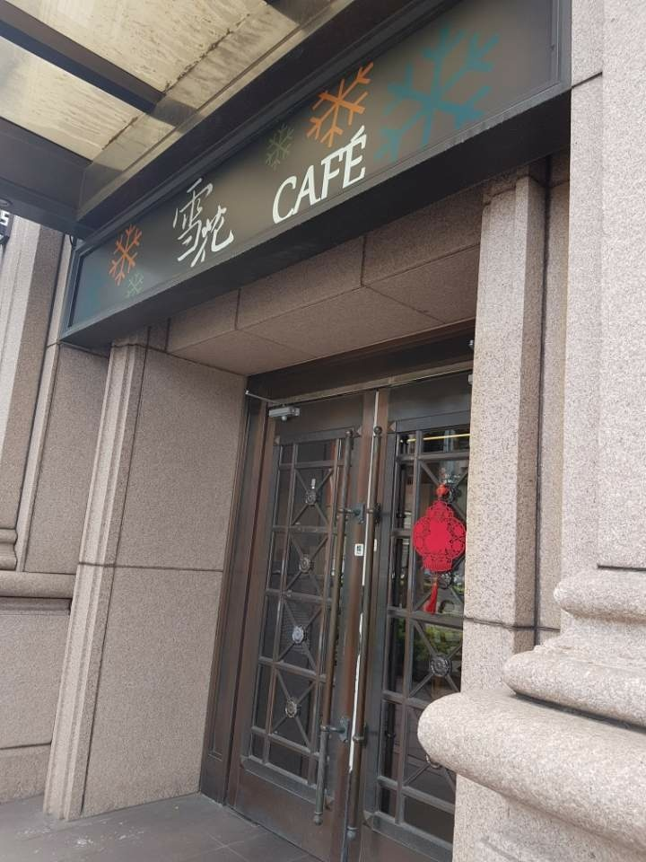
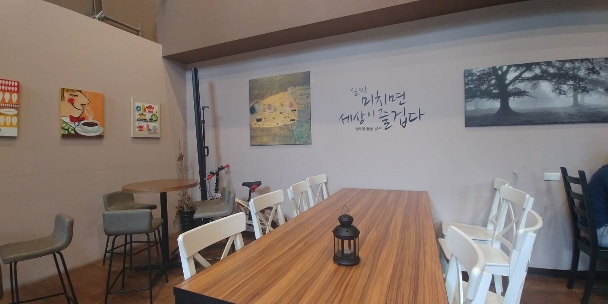
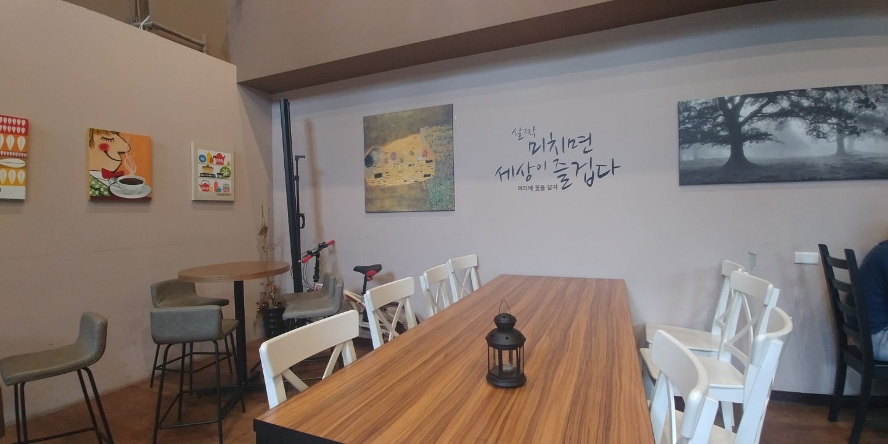
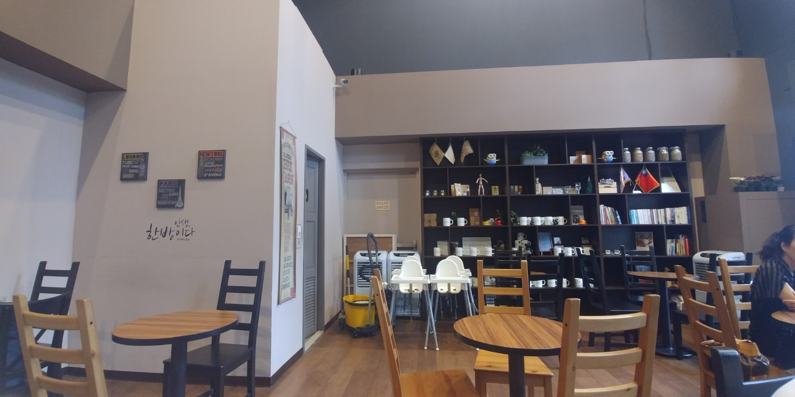
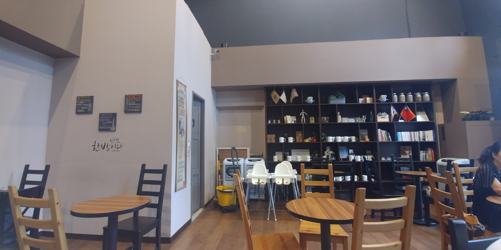
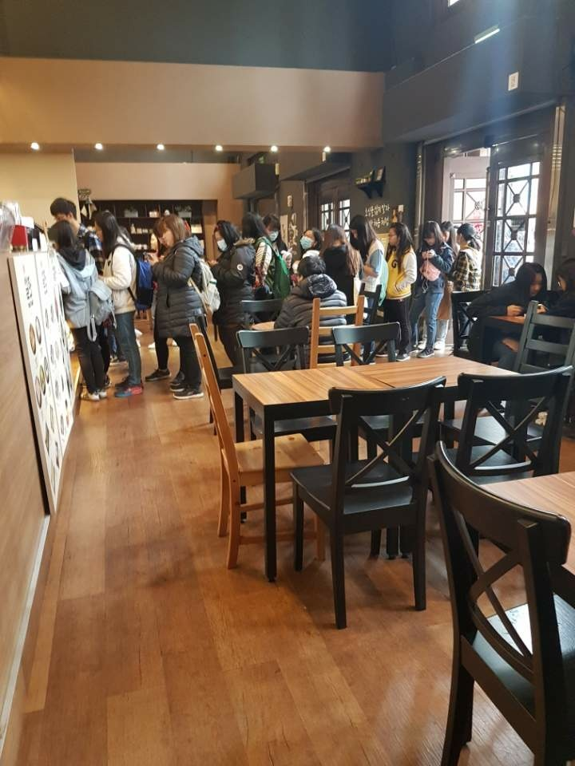
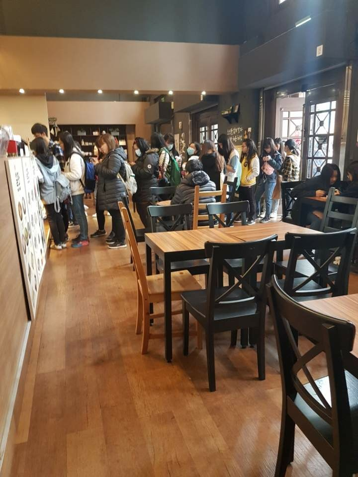
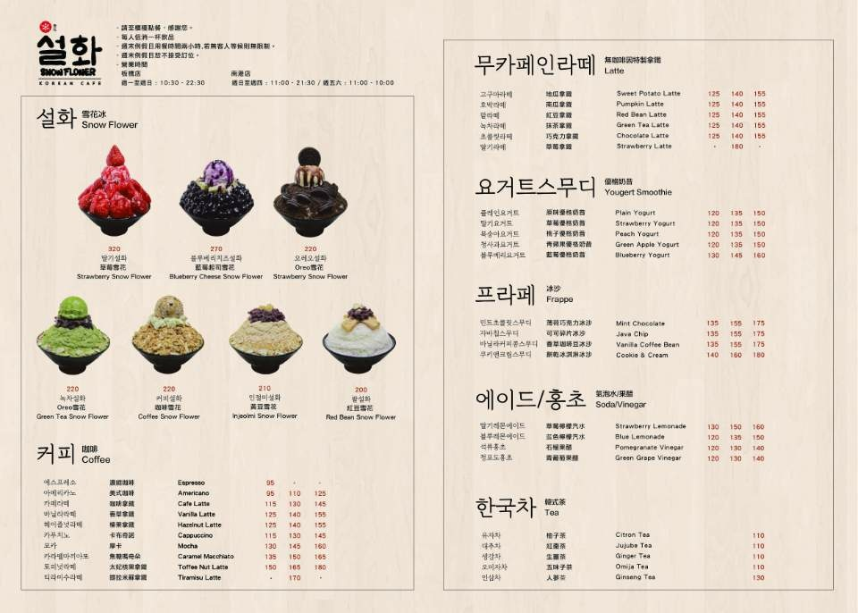
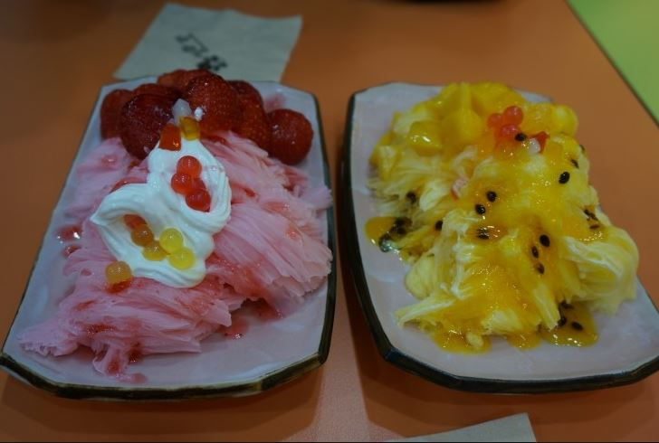
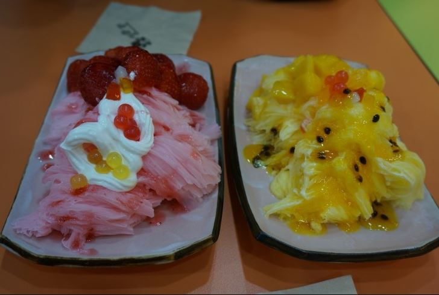

雪花 : 눈 <설> 꽃 <화>로 눈꽃이라는 뜻이다.
< 대만 설화 전문점은 대만에서부터 시작되어 대한민국에서 까지 이어져 왔다. >
< 대만 설화 내부 인테리어 모습 >
 


 


 


설화 인테리어는 사장님이 한국사람이여서 한국 느낌나게 꾸몄다고 합니다.
< 설화 전문점 메뉴판>



 


설화 전문점에는 사장, 매니저, 직원3명이서 운영중에 있습니다.
얼마 전 대만에 있는 설화 전문점을 다녀왔는데 생각 보다 너무 맛있었어요 ^^ 한국에 온 것 처럼 느껴졌어요 !!
꼭 추천 드립니다. 대만에 여행 가시면 한번 들리시는 것도 나쁘지 않아요 !! 그리고 지금 컵홀더 연예인이 그려져있데요 ^^


< 대만 설화 전문점 가는 길 알려드릴꼐요 !!>
구글 지도에 보면 반차호 설화라고 치면 자세하게 나올거예요 !!
쉽게 가는 방법은 타이페이 역에서 반차오가는 전철 타시면 됩니다. 내리고 나면 사진으로 알려드릴께요 !!


제가 가보고 느낀 점은 대만에서 시작해서 지금의 대한민국까지 오기까지 많은 노력이 있었다고 생각해요.
그래서 그 전문점을 보고선 사장님이 한국분이신데 대만에 와서 한국에 알리기 노력을 많이 하셨다고 해요. 저는 자랑스럽게 생각합니다.
한국에 있는분들 대만에 놀러가시면 한번쯤은 들려서 한국 분위기를 느껴보시기 바랍니다.